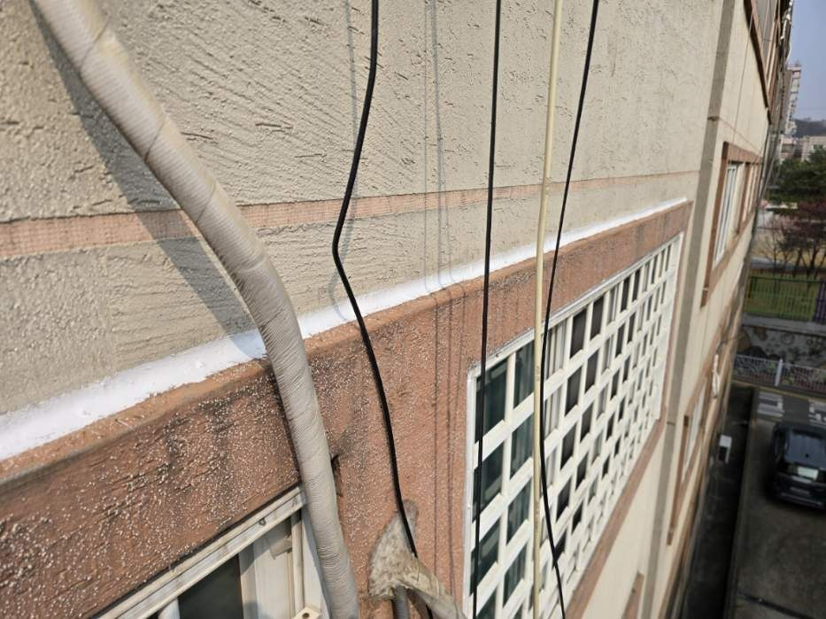
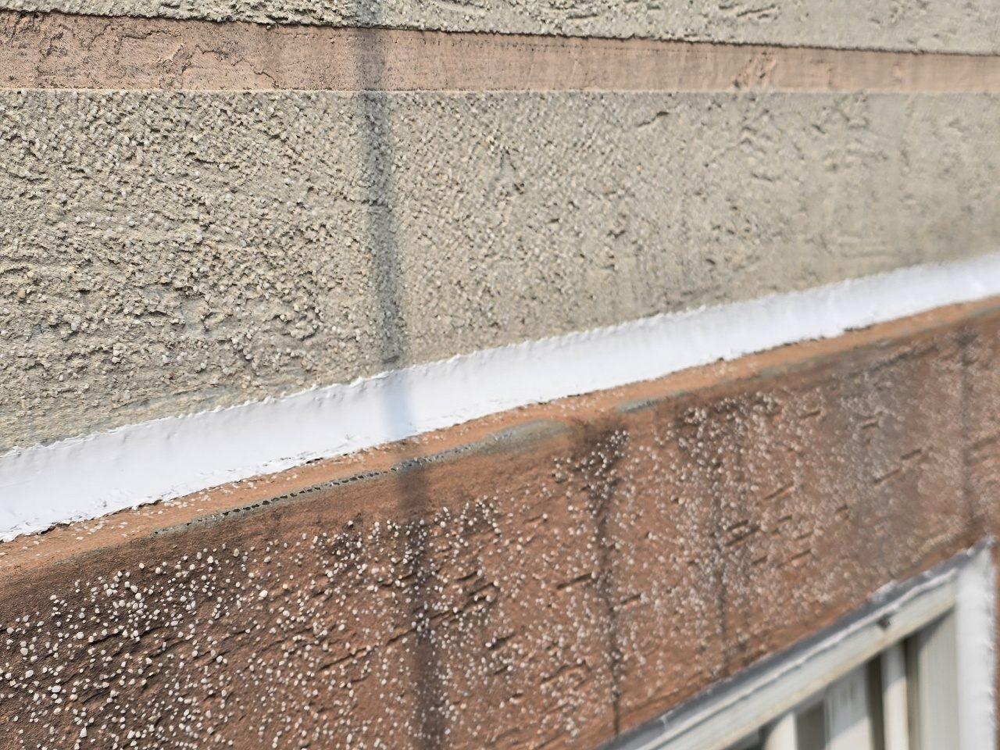
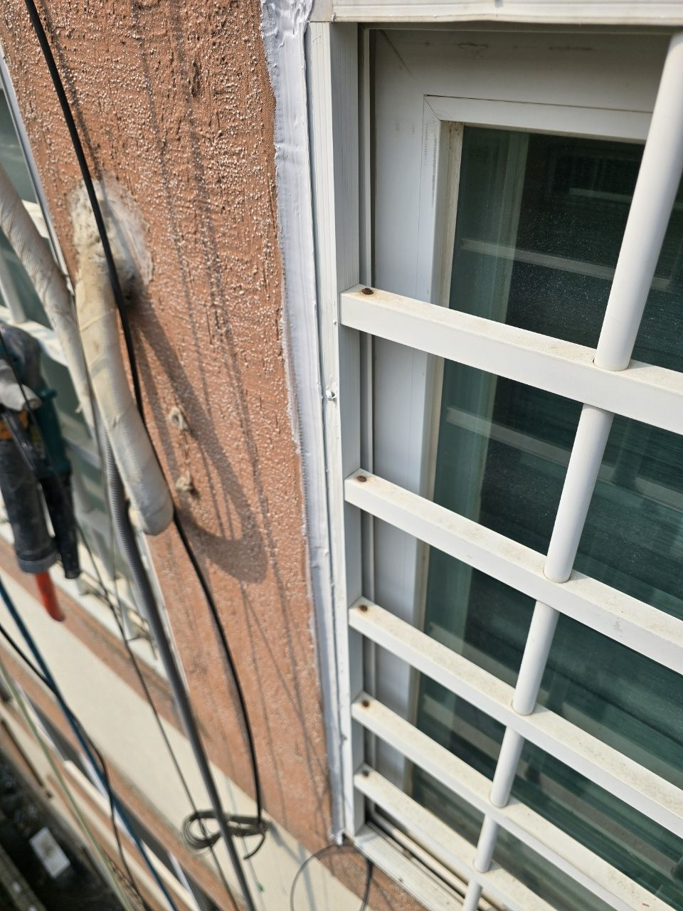
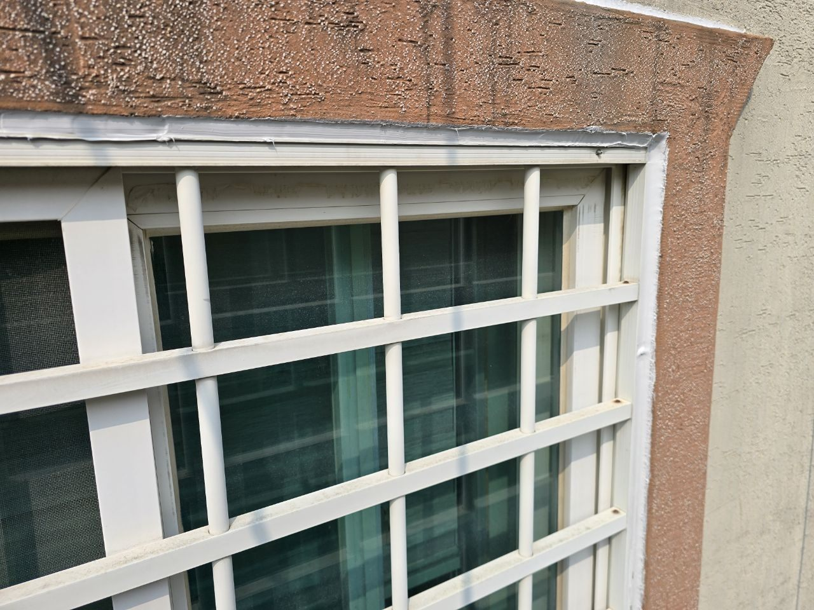

현장 상황
평택시 세교동 건물의 외벽 누수를 점검하고 외벽 코킹 방수 작업을 진행한 현장입니다. 비가 온 뒤에만 실내에 얼룩이 생기는 누수는 배관이 아니라 외벽 틈으로 빗물이 스며드는 경우가 많습니다.
외벽 점검
건물 외벽을 따라 마감재와 마감재가 만나는 이음부, 창틀 위아래의 접합부를 살폈습니다. 이런 이음부는 시간이 지나면서 코킹이 굳고 갈라져 방수 기능을 잃기 쉽습니다.

이음부 코킹 방수
외벽 이음부를 따라 코킹을 새로 시공했습니다. 눈에 보이는 틈만 메우는 것이 아니라 빗물이 흘러 들어갈 수 있는 경로를 따라 이어서 작업하는 것이 외벽 방수의 핵심입니다.


창틀 둘레 작업
창 주변은 빗물이 가장 많이 모이는 곳이라 세로 이음부와 모서리까지 이어서 작업했습니다. 외벽 작업은 높은 곳에서 하는 만큼 안전장비를 갖추고 진행했습니다.


외벽 코킹이 갈라지는 이유
외벽은 햇빛, 비, 온도 변화를 계속 받아서 코킹이 굳고 갈라지거나 떨어집니다. 창틀 주변과 마감재가 만나는 이음부는 빗물이 모이는 자리라 먼저 상합니다. 코킹은 기존 재료를 제거하고 표면을 정리한 뒤 새로 시공해야 접착이 제대로 되고, 시공 후에는 물을 뿌려 스며들지 않는지 확인합니다.
마무리
비 온 뒤에만 벽지에 얼룩이 생기거나 곰팡이가 반복된다면 실내 배관보다 외벽을 먼저 의심해 볼 수 있습니다. 증상이 나타나는 시점을 기억해 두시면 원인을 찾는 데 큰 도움이 됩니다.
외벽 누수는 방치하면 균열이 커져 공사 범위도 커집니다. 평택 세교동을 비롯한 지역에서 비가 온 뒤에만 반복되는 얼룩이 있으시면 편하게 연락 주세요.
접수 안내
비슷한 증상으로 문의하실 곳을 찾고 계신다면 전화로 접수해 주세요. 접수 건은 확인 후 신속하게 연결해 안내해 드리며, 현장 진단 후 견적에 동의하신 뒤에만 작업이 진행됩니다.